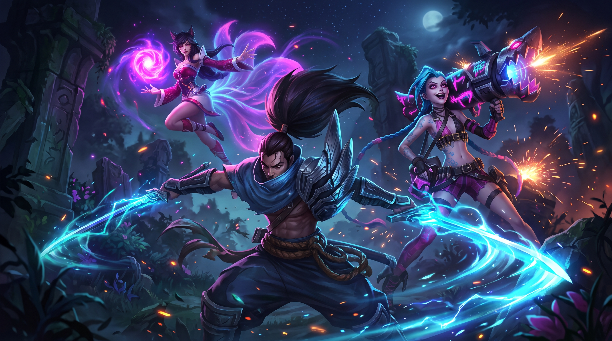
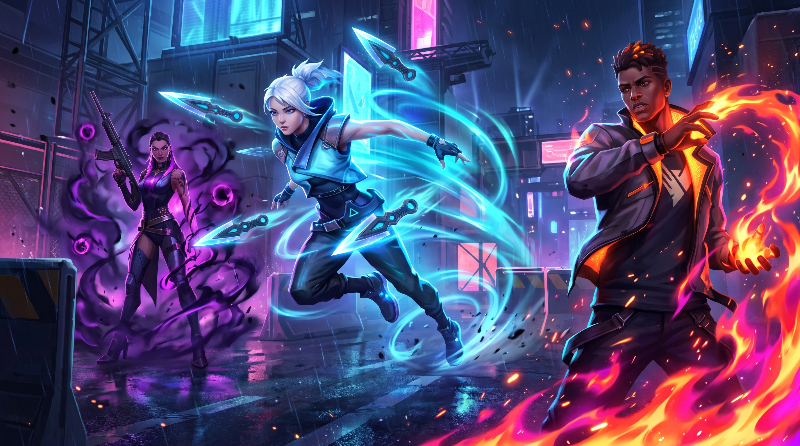
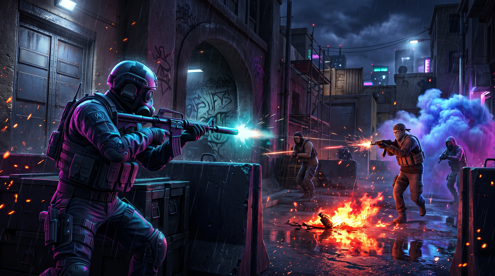
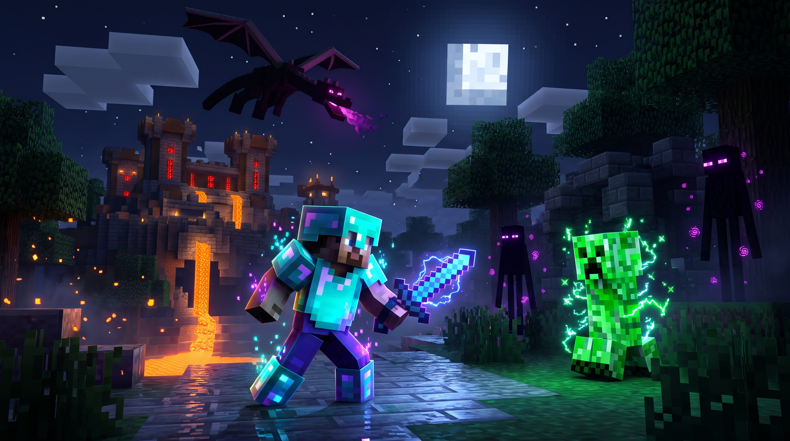
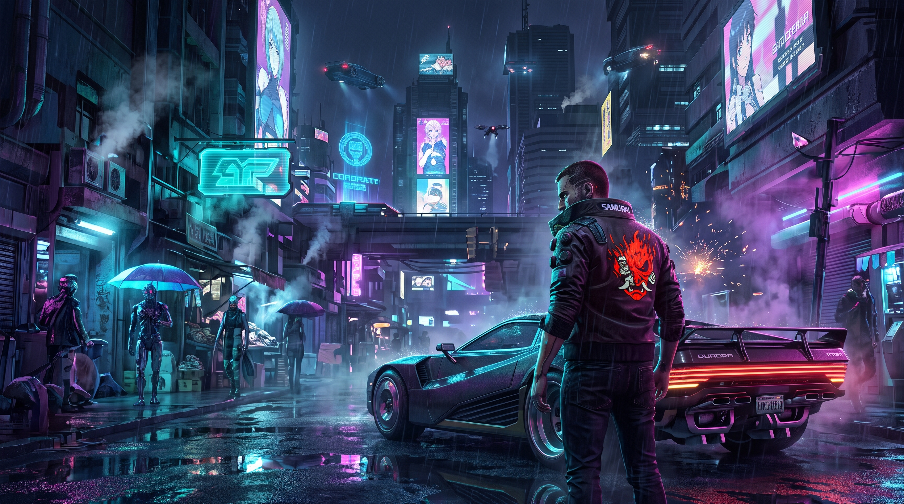

Oyun Dünyası & Favori Evrenlerim
Rekabetçi arenalarda reflekslerimi ve strateji yeteneğimi test ederken, sinematik ve açık dünya oyunlarıyla farklı evrenlerin atmosferini deneyimliyorum.

1. League of Legends
Anlık karar verme hızı, harita kontrolü ve takım koordinasyonunun zaferi belirlediği, rekabetçi ruhu en üst seviyede yaşatan MOBA efsanesi.
- Tür: MOBA (Çok Oyunculu Çevrimiçi Savaş Arenası)
- Oynanış Odağı: Makro strateji, koridor hakimiyeti ve takım savaşları
- Öne Çıkan Beceri: Hızlı refleks, pozisyon alma ve oyun içi ekonomi yönetimi
- Atmosfer: Runeterra evreninin zengin karakter hikâyeleri ve rekabetçi dereceli sistemi
- Takım Dinamiği: 5 kişilik kusursuz iletişim ve rol dağılımı
- Unutulmaz Detay: Son saniyede yapılan kritik bir hamleyle maçın kaderini değiştirmek

2. VALORANT
Keskin nişancılık mekaniklerini benzersiz ajan yetenekleriyle birleştiren, her raundu ayrı bir satranç hamlesine dönüşen taktiksel FPS.
- Tür: 5v5 Karakter Tabanlı Taktiksel FPS
- Oynanış Odağı: Keskin aim, yetenek kombinasyonları ve harita kontrolü
- Öne Çıkan Beceri: Milisaniyelik tepki süresi ve soğukkanlı clutch anları
- Atmosfer: Modern ve fütüristik görsel tarz ile yüksek tempolu rekabet
- Takım Dinamiği: Düellocu, gözcü ve kontrol uzmanı rollerinin uyumlu sinerjisi
- Unutulmaz Detay: Tek başına kalınan 1v4 durumlarda raundu çevirmenin verdiği adrenalin

3. Counter-Strike 2 (CS2)
FPS dünyasının değişmeyen klasiği. Saf mekanik yetenek, ses kasımı, bomba taktikleri ve kusursuz silah kontrolünün konuştuğu rekabet arenası.
- Tür: Klasik Rekabetçi Taktiksel FPS
- Oynanış Odağı: Spray kontrolü, ses takibi ve dinamik sis bombası taktikleri
- Öne Çıkan Beceri: Harita bilgisi, cross placement ve raund ekonomisi
- Atmosfer: Source 2 motoruyla yenilenen gerçekçi ışıklandırma ve fizik detayları
- Kültür & Topluluk: Yıllardır eskimeyen e-spor ruhu ve ikonik harita tasarımları
- Unutulmaz Detay: Mirage ve Dust II gibi efsane haritalardaki yüksek tansiyonlu uzatma turları

4. Minecraft
Hayal gücünün sınırlarını ortadan kaldıran, arkadaşlarla kurulan dünyalarda sıfırdan medeniyetler inşa etmeye olanak tanıyan sınırsız açık dünya.
- Tür: Sandbox / Hayatta Kalma ve Yaratıcılık
- Oynanış Odağı: Keşif, kaynak toplama, mimari inşa ve Redstone mühendisliği
- Öne Çıkan Beceri: Tasarım planlaması ve otomatik sistemler kurma
- Atmosfer: Huzurlu müzikler eşliğinde kendi kurallarını yazdığın uçsuz bucaksız evren
- Sosyal Deneyim: Özel sunucularda arkadaşlarla ortak projeler ve maceralar
- Unutulmaz Detay: Gece karanlığında ilk sığınağı kurup ardından devasa yapılar yükseltmek

5. Cyberpunk 2077
Neon ışıklarla yıkanan Night City sokaklarında geçen, derin hikâye anlatımı ve fütüristik atmosferiyle içine çeken sinematik bir rol yapma deneyimi.
- Tür: Açık Dünya Aksiyon RPG
- Oynanış Odağı: Seçimlere göre şekillenen senaryo, siber donanımlar ve farklı savaş stilleri
- Öne Çıkan Beceri: Karakter geliştirme, hack mekanikleri ve keşif
- Atmosfer: Yağmurlu gece sokakları, devasa gökdelenler ve distopik neon estetiği
- Hikâye Anlatımı: Akılda kalıcı karakterler ve sinematik görev kurgusu
- Unutulmaz Detay: Night City'de gece sürüşü yaparken şehrin neon ışıkları altında kaybolmak